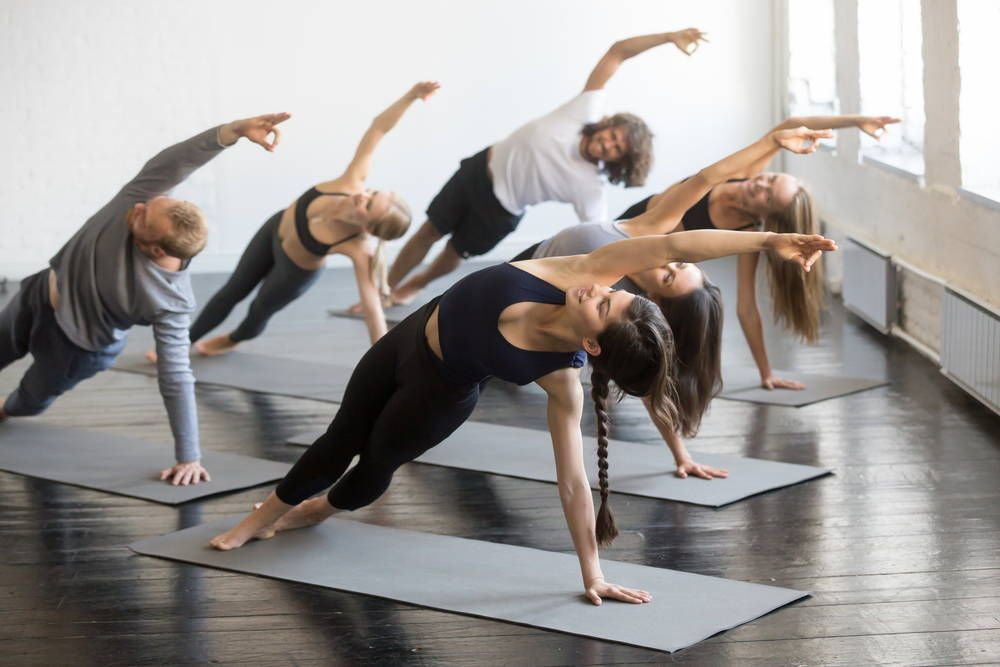
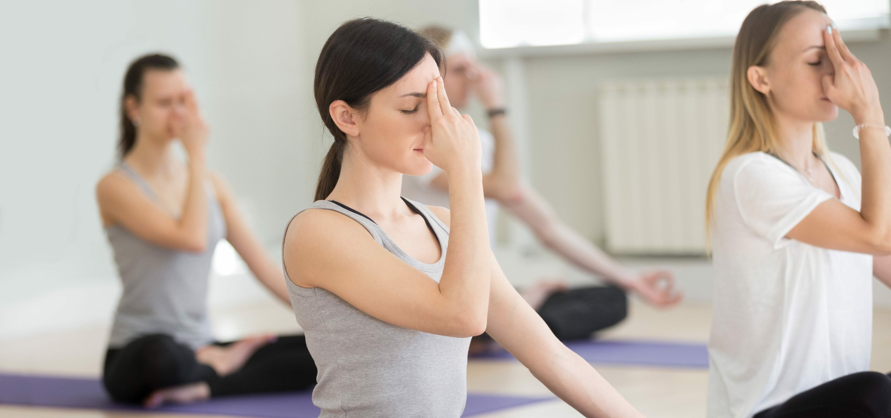
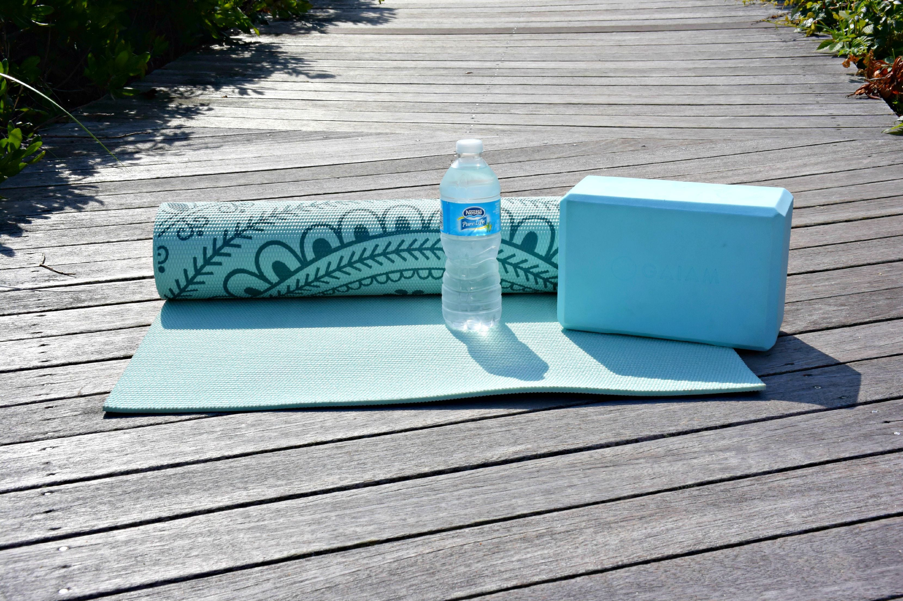
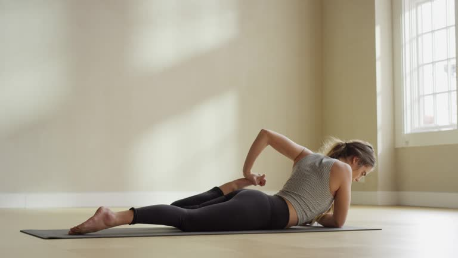
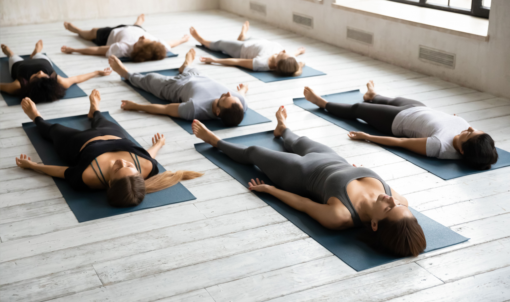
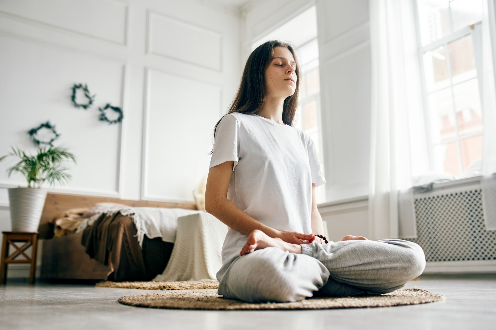

Полезные материалы
Полезные статьи, советы тренеров и словарь терминов для вашей практики.
Статьи и советы

Здоровье
3 асаны для здоровой спины
Простые упражнения, которые помогут снять напряжение после рабочего дня за компьютером.

Для новичков
Как правильно дышать на коврике?
Разбираем базовые техники дыхания (Уджайи) и почему задержка дыхания — это плохо.

Практика
Что взять с собой на первое занятие?
Список вещей, которые понадобятся вам в студии, и о чем лучше оставить дома.

Философия
Йога для начинающих: 3 главных мифа
Развенчиваем страхи о том, что йога — это только для гибких и худых людей.

Здоровье
Почему нельзя пропускать Шавасану?
Рассказываем, почему 5 минут лежания в конце занятия важнее, чем кажется.

Медитация
Как медитировать в домашних условиях
Простая практика на 5 минут в день, которая поможет снизить уровень стресса.
Словарь йоги
Часто на занятиях тренеры используют термины на санскрите. Мы собрали самые популярные из них, чтобы вы чувствовали себя увереннее.
Устойчивое и удобное положение тела. Это не просто физическое упражнение, а способ соединить ум и тело через концентрацию.
Искусство управления дыханием. «Прана» означает жизненную энергию, а «яма» — контроль. Практика различных дыхательных техник помогает успокоить ум и зарядиться энергией.
Плавная последовательность асан, где каждое движение синхронизировано с вдохом или выдохом. Это динамичный стиль практики, который развивает выносливость.
Поза полного расслабления, которую обычно выполняют в конце занятия. Лежа на спине с закрытыми глазами, вы позволяете телу усвоить полученный опыт и восстановить силы.